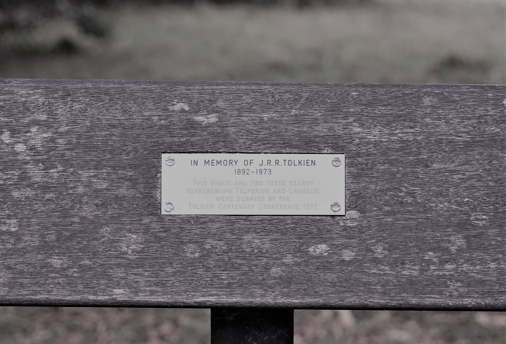

| Universitetet | Byen |
|---|
Oxford er heimbyen til J.R.R. Tolkien.
John Ronald Reuel Tolkien er forfattaren av Ringenes Herre, Hobbiten og andre bøker i same universet.
Det finst eit museum dedikert til han, i tillegg til denne benken i ein park han brukte å sitte på vist på bildet.
Trykk og hald inne på bildet for å forstørre.